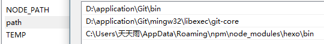

生命不息，折腾不止——hexo并不好玩
双十一妥妥地过去了。
对于一只无聊的野生单身汪来说，这样的节日确实，无聊。于是尝试了一下看起来13格很高的github+hexo博客。
可能时间隔得稍微有点长，双十一不是早就过去了么。。。
阮一峰在博客里这么写：
喜欢写Blog的人，会经历三个阶段。
第一阶段，刚接触Blog，觉得很新鲜，试着选择一个免费空间来写。
第二阶段，发现免费空间限制太多，就自己购买域名和空间，搭建独立博客。
第三阶段，觉得独立博客的管理太麻烦，最好在保留控制权的前提下，让别人来管，自己只负责写文章。
我就高高兴兴地奔着第三个阶段去了。
后面留坑，如果可能的话就分享一下在用github搭建博客过程中遇到的问题以及解决方法。
<<<(2016.11.19)-1
hexo是用node.js写的，github要用到git，所以首先要在电脑上安装这两样东西。
node.js: https://nodejs.org/
git: https://git-scm.com/
装好之后，多半需要配置环境变量

差不多这样，要配置git的和hexo的。
应用的安装顺序是：
安装node.js
安装git
在git命令行中安装hexo
环境变量的配置顺序是：
git的bin和git-core
（安装hexo）
hexo
hexo是全局安装的，git命令行要用到的npm工具其实是node.js的，所以可以在node.js或者git的CMD中执行hexo的安装命令，都行（建议在node.js中，因为能成功）
npm install -g hexo-cli
这里的意思是，node.js安装成功后就有CMD了，在这个CMD中始终可以使用npm。如果环境变量配置有问题，会发生git的CMD里npm出错的情况。
安装hexo后要配置hexo的环境变量，所以说上面环境变量的配置不是一步完成的。
然后，，，
坑还是留着吧。
hexo: https://hexo.io/ 有完整的文档，英文的
(2016.11.19)-1;
后来发现对于在github上部署的博客，git的使用难于站点的搭建。
因为hexo要配置域名才能正常使用，图方便前几天就把blog.how.gs这个域名解析过去了。不过最终，现在还是回来了。
同样原因，留坑……
<<<(2016.11.19)-2
gthub搭建博客的缺点：
每次发布文章都需要重新部署站点
本地文件备份难
百度不收录
MarkDown真的好用？
附件管理
第一个，我们常用的博客，每次发布文章只需要添加一条新的记录到数据库就好了。就像web开发中的Ajax。hexo是静态的博客框架。每一次新建文章，都需要执行clean命令清空数据库、缓存，然后执行g命令重新编译文件，生成博客内容，最后将public目录中的内容推到gtithub上。
这个过程稍微繁琐。如果拿ajax作类比，有异步数据交互的方法不用，非要每次都完全刷（部）新（署）网（网）页（站）吗？
如果博客内容非常多。百兆以下还将就，如果以上，每发布一篇文章都需要推那么数据上去呢。
所以每次发布文章都需要部署站点是缺点。
第二个是是本地文件备份难。
比如多云转晴hower用的zblog，需要备份的数据有两部分，mysql中的配置数据和文件中的附件。
hexo的话需要备份的是当时选定的本地目录。这里的问题是原作者本意希望将hexo目录下的文件也都推送到git上面。可以前几天在尝试的时候，（由于能力不足）遇到一些不好解决的问题。在hexo推送文件的过程中会在本地生成隐藏的.git目录，包含一些git信息。然后在github提交hexo模板目录时，会因为git已经被管理提交失败。
每次都手动删掉？（麻烦。。）
或许可以尝试用onedrive把目录挂载到网盘上。
第三个，百度不收录。知乎上可以找到很好的解决办法，于是，我还是觉得独立博客好用。
第四个，MarkDown会将内容解析成HTML，目的是提高可读性。这本身没什么问题，可猿们很多用sublime，换行不是像段落一样换行，是折行。当然这不是什么大问题。
第五个有点和第一个重了，好吧其实本来就三个。hexo的附件管理需要像管理网页资源一样放到sources文件夹。怎么用都感觉不如zblog。
gthub搭建博客的优点：
速度理想，流量无限，空间很大
13格高
hexo自然是有优点的，很多人都是冲着github的可靠性去的。
不过我相信大多数人更倾向于第二点。
(2016.11.19)-2;